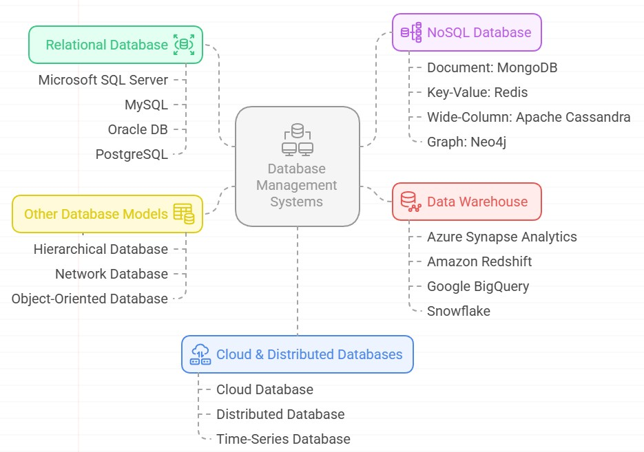
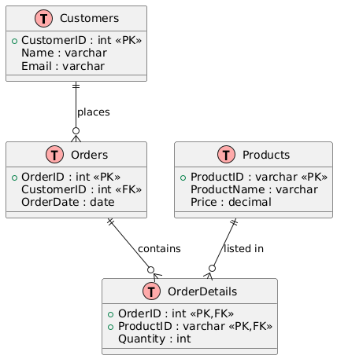

002. Getting Started
002_Getting_Started
Datum
- A datum (plural: data) is a single piece of information. It represents the most basic unit of data.
- Example "42" is a datum representing a person's age.
| Age |
|---|
| 42 |
Data
- Raw facts or values stored in a database (e.g., numbers, text, dates).
- Example below
| Name | Age | City |
|---|---|---|
| Alice | 30 | New York |
| Bob | 25 | Los Angeles |
Table
- A collection of rows and columns that stores data about a specific subject, like Customers or Orders.
Column (Field)
- A named attribute or data category within a table (e.g., Name, Age).
Row (Record)
- A single entry or instance in a table, representing a single item or entity.
Database
A database is an organized collection of data that is stored and accessed electronically. Below are the types of database
SQL (Structured Query Language)
- The standard language for managing and manipulating relational databases using commands like
SELECT,INSERT,UPDATE, andDELETE.
T-SQL (Transact-SQL)
- Microsoft's extension to SQL that adds procedural logic (e.g.,
IF,WHILE, error handling) and system-level functions.
Database Management Systems

Relational Database (RDBMS)
- A database that organizes data into tables which are related to each other via keys.
Relational Database Example: Online Store
Imagine a database for an online store with four related tables:
1. Customers Table
| CustomerID | Name | |
|---|---|---|
| 1 | Alice | alice@email.com |
| 2 | Bob | bob@email.com |
- Primary Key:
CustomerID
2. Orders Table
| OrderID | CustomerID | OrderDate |
|---|---|---|
| 101 | 1 | 2024-06-10 |
| 102 | 2 | 2024-06-11 |
| 103 | 1 | 2024-06-12 |
- Primary Key:
OrderID - Foreign Key:
CustomerID→ links to Customers.CustomerID
3. Products Table
| ProductID | ProductName | Price |
|---|---|---|
| P1 | Laptop | 1000.00 |
| P2 | Phone | 500.00 |
- Primary Key:
ProductID
4. OrderDetails Table (to link Orders to Products)
| OrderID | ProductID | Quantity |
|---|---|---|
| 101 | P1 | 1 |
| 101 | P2 | 2 |
| 102 | P2 | 1 |
- Composite Primary Key: (
OrderID,ProductID) -
Foreign Keys:
-
OrderID→ Orders ProductID→ Products
How It's "Relational"
Ordersis related toCustomersviaCustomerIDOrderDetailsis related toOrdersandProducts- You can JOIN these tables in SQL to answer questions like:
“What products did Alice order on June 10?”

Relational Database (RDBMS) Solutions
Microsoft SQL Server
A robust RDBMS by Microsoft, offering enterprise-grade features, scalability, and integration with Windows ecosystems. Widely used in business applications and data analytics.
MySQL
An open-source RDBMS known for its speed, reliability, and ease of use. Powers many web applications, including WordPress, and is a popular choice for startups.
Oracle DB
A high-performance, scalable RDBMS designed for large enterprises. Offers advanced features like partitioning, Real Application Clusters (RAC), and strong security controls.
PostgreSQL
An advanced open-source RDBMS with support for JSON, geospatial data, and custom extensions. Known for its standards compliance and extensibility.
NoSQL Database Solutions
NoSQL databases provide flexible schemas, horizontal scalability, and optimized performance for unstructured or semi-structured data.
Document: MongoDB
A document-oriented NoSQL database storing data in JSON-like formats. Ideal for agile development, real-time analytics, and handling dynamic schemas.
Key-Value: Redis
An in-memory key-value store with sub-millisecond latency. Used for caching, session management, and real-time applications like leaderboards.
Wide-Column: Apache Cassandra
A distributed NoSQL database designed for high availability and linear scalability. Suited for time-series data, IoT, and applications requiring fault tolerance.
Graph: Neo4j
A graph database optimized for managing highly connected data. Used in fraud detection, recommendation engines, and social network analysis.
Other Database Models
Hierarchical Database
Organizes data in a tree-like structure, best suited for systems with parent-child relationships (e.g., file systems, IBM IMS).
Network Database
Extends hierarchical models with many-to-many relationships, following the CODASYL standard. Rarely used today but foundational in early database systems.
Object-Oriented Database
Stores data as objects, supporting inheritance and polymorphism. Used in complex domains like CAD/CAM and scientific applications.
Cloud & Distributed Databases
Cloud Database
Fully managed database services (e.g., Amazon RDS, Azure SQL) offering scalability, backups, and high availability without infrastructure overhead.
Distributed Database
Spreads data across multiple nodes for fault tolerance and scalability (e.g., Google Spanner, Cassandra). Ensures consistency and availability in global systems.
Time-Series Database
Optimized for timestamped data (e.g., IoT, monitoring). InfluxDB and TimescaleDB enable efficient storage and querying of time-based metrics.
Data Warehouse
Centralized repositories for analytical reporting, integrating data from multiple sources.
Solutions
- Azure Synapse Analytics: Unified analytics with big data and SQL integration.
- Azure Synapse Analytics
- Amazon Redshift: Cloud-based data warehousing with columnar storage.
- Amazon Redshift
- Google BigQuery: Serverless, scalable analytics with SQL support.
- Google BigQuery
- Snowflake: Multi-cloud data warehousing with separation of storage and compute.
- Snowflake